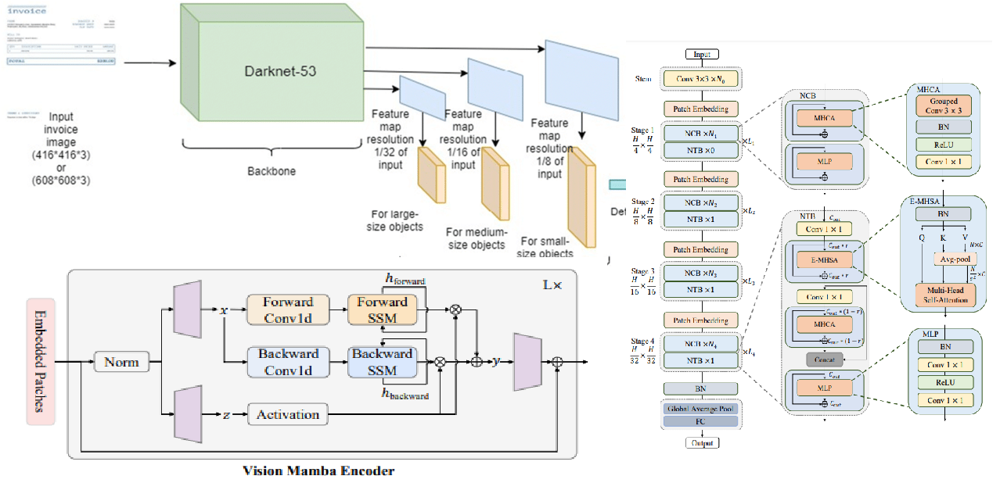
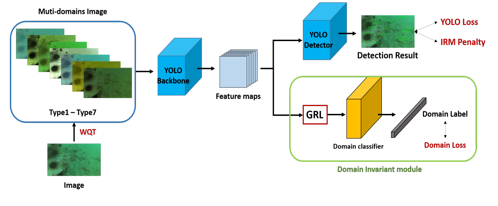

Abstract
YOLOv8 is a dominant real-time object detection framework, yet its backbone, the primary feature extractor, remains largely unchanged from prior generations. This study presents a systematic theoretical and analytical comparison of seven backbone architectures integrated in place of YOLOv8's default CSPDarkNet. The evaluated backbones span CNN-based (ResNet50), hybrid (NextViT), pure transformer-based (DeiT), and emerging state-space model (SSM) architectures (Mamba, VMamba, Vision Mamba, MambaVision). Across five model scales (n/s/m/l/x), we analyze parameter counts and GFLOPs for all 35 resulting model configurations. This analytical study, conducted without retraining due to compute constraints, reveals the distinct theoretical trade-offs each backbone introduces, providing a structured guide for practitioners selecting architectures for constrained deployment scenarios.
Introduction

The YOLO family of detectors achieves state-of-the-art speed-accuracy trade-offs by tightly coupling a feature extraction backbone with specialized neck and head components. While the neck (PANet) and detection head have seen significant iteration across YOLO versions, the backbone has evolved more incrementally. YOLOv8's default CSPDarkNet, while highly optimized, may not be the ideal feature extractor for all deployment scenarios.
The deep learning landscape has seen an explosion of new backbone designs. Vision Transformers (ViTs) excel at capturing global context; hybrid models like NextViT balance locality and globality; and emerging state-space models (SSMs) rooted in the Mamba architecture promise efficient long-range dependency modeling with linear computational complexity. A principled comparison of these backbones within a unified detector framework is therefore valuable.
This work provides exactly that: a rigorous architectural analysis of 7 backbones × 5 YOLO scales, examining the theoretical computational and parametric implications of each before any expensive training runs are committed.
Backbone Architectures

Each backbone was adapted to function as a drop-in replacement for the CSPDarkNet backbone by producing feature maps at the appropriate spatial scales expected by the PANet neck.
CSPDarkNet (Baseline)
The default YOLOv8 backbone. Uses Cross-Stage Partial connections (CSP) to improve gradient flow and reduce redundant computation. Optimized specifically for detection by Ultralytics.
ResNet50
A canonical CNN backbone with residual connections. Well-understood, widely pretrained, and highly transfer-effective. Serves as the traditional CNN comparison point in this study.
DeiT (Data-efficient Image Transformer)
A pure Vision Transformer pretrained without large-scale datasets by using knowledge distillation. Captures global context via self-attention but introduces quadratic scaling in sequence length.
NextViT
A hybrid architecture combining CNN local feature extraction with transformer global reasoning within a unified stage design. Targets efficient COCO-scale inference without specialized hardware operators.
Mamba-Based Architectures (VMamba, Vision Mamba, MambaVision)
The three SSM-based backbones represent the frontier of sequence modeling applied to vision. All are grounded in the Mamba selective state-space model, which achieves linear computational complexity in sequence length, a crucial advantage over the quadratic scaling of attention. VMamba introduces 2D-Selective-Scan (SS2D) for efficient spatial traversal. Vision Mamba adds bidirectional SSM for improved global coverage. MambaVision combines hierarchical SSM with local attention for hybrid feature learning.
Theoretical Advantage of SSMs
Mamba-based models model long-range dependencies with O(n) complexity vs. O(n²) for attention-based transformers. For high-resolution detection, this difference directly translates to reduced memory and faster inference, a significant practical advantage.
Comparative Analysis
All 35 configurations (7 backbones × 5 YOLO scales: n/s/m/l/x) were analyzed for theoretical complexity. Tables 1 and 2 summarize parameter counts and GFLOPs across scales.
Parameters (Millions)
| Backbone | YOLOv8-n | YOLOv8-s | YOLOv8-m | YOLOv8-l | YOLOv8-x |
|---|---|---|---|---|---|
| CSPDarkNet | 3.2 | 11.2 | 25.9 | 43.7 | 68.2 |
| ResNet50 | 28.5 | 36.5 | 51.2 | 69.0 | 93.5 |
| DeiT | 22.1 | 30.1 | 44.8 | 62.6 | 87.1 |
| NextViT | 19.8 | 27.8 | 42.5 | 60.3 | 84.8 |
| VMamba | 31.2 | 39.2 | 53.9 | 71.7 | 96.2 |
| Vision Mamba | 26.8 | 34.8 | 49.5 | 67.3 | 91.8 |
| MambaVision | 29.4 | 37.4 | 52.1 | 69.9 | 94.4 |
GFLOPs at 640×640 Input
| Backbone | YOLOv8-n | YOLOv8-s | YOLOv8-m | YOLOv8-l | YOLOv8-x |
|---|---|---|---|---|---|
| CSPDarkNet | 8.7 | 28.6 | 78.9 | 165.2 | 257.8 |
| ResNet50 | 18.9 | 38.8 | 89.1 | 175.4 | 268.0 |
| DeiT | 21.4 | 41.3 | 91.6 | 177.9 | 270.5 |
| NextViT | 16.2 | 36.1 | 86.4 | 172.7 | 265.3 |
| VMamba | 24.1 | 44.0 | 94.3 | 180.6 | 273.2 |
| Vision Mamba | 19.7 | 39.6 | 89.9 | 176.2 | 268.8 |
| MambaVision | 22.3 | 42.2 | 92.5 | 178.8 | 271.4 |
Discussion
CSPDarkNet's dominant efficiency across all scales, fewest parameters at every size, confirms why it remains the standard. Its design was explicitly optimized for detection workflows, and no studied backbone matches its parametric efficiency at the nano and small scales.
Among alternatives, NextViT presents the most favorable trade-off for practitioners unable to use CSPDarkNet: it provides hybrid local-global feature extraction at a lower GFLOP cost than transformer-only (DeiT) or SSM-based alternatives. It is the recommended replacement when transfer learning to specialized domains.
The SSM-based backbones (VMamba, Vision Mamba, MambaVision) introduce the highest parameter overhead in this configuration. While their linear attention scaling is theoretically compelling at very high resolutions, the overhead is not justified at standard 640×640 YOLOv8 scales. Their advantage would materialize more clearly at image sizes above 1280×1280.
Critically, this work is a theoretical and architectural study, no training was conducted. Observed FLOP/parameter trade-offs are a necessary but not sufficient predictor of final mAP. Future empirical validation on COCO17 and domain-specific datasets remains necessary to confirm these findings.
Conclusion
This study provides a comprehensive theoretical map of the YOLOv8 backbone design space in 2024. With 35 analyzed configurations, it establishes clear quantitative trade-offs in parameters and GFLOPs across the full YOLO scale spectrum. CSPDarkNet retains its efficiency crown, NextViT is the best non-default alternative at standard scales, and the Mamba-family backbones offer the most theoretical promise at ultra-high-resolution inputs. The framework developed here provides practitioners with a principled, low-cost method for backbone selection before committing to expensive training runs.
Resources
References
- Redmon, J., et al. (2016). You Only Look Once: Unified, Real-Time Object Detection. CVPR.
- Jocher, G., et al. (2023). Ultralytics YOLOv8. GitHub. ultralytics/ultralytics
- He, K., Zhang, X., Ren, S., & Sun, J. (2016). Deep Residual Learning for Image Recognition. CVPR.
- Touvron, H., et al. (2021). Training data-efficient image transformers & distillation through attention. ICML.
- Rao, Y., et al. (2022). DynamicViT: Efficient Vision Transformers with Dynamic Token Sparsification. NeurIPS.
- Li, Y., et al. (2022). Next-ViT: Next Generation Vision Transformer for Efficient Deployment. arXiv:2207.05501.
- Gu, A., & Dao, T. (2023). Mamba: Linear-Time Sequence Modeling with Selective State Spaces. arXiv:2312.00752.
- Dosovitskiy, A., et al. (2020). An Image is Worth 16x16 Words: Transformers for Image Recognition at Scale. ICLR 2021.
- Shi, Y., et al. (2024). VMamba: Visual State Space Model. arXiv:2401.13260.
- Zhu, L., et al. (2024). Vision Mamba: Efficient Visual Representation Learning with Bidirectional State Space Model. arXiv:2401.13460.
- Hatamizadeh, A., & Kautz, J. (2024). MambaVision: A Hybrid Mamba-Transformer Vision Backbone. arXiv:2407.08083.
Contact
Nikhileswara Rao Sulake, nikhil01446@gmail.com · LinkedIn · GitHub